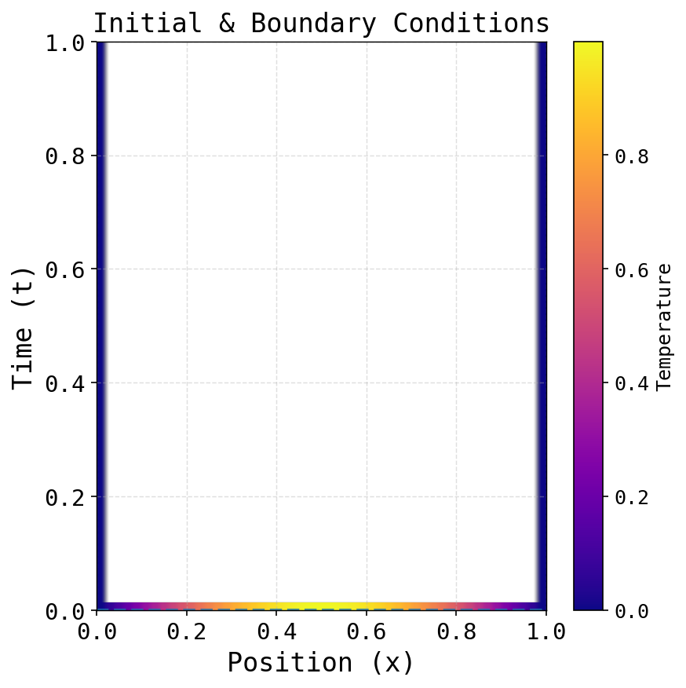
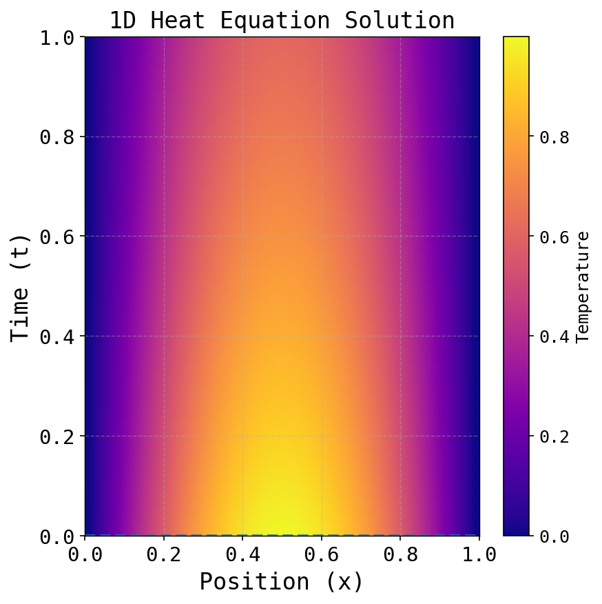
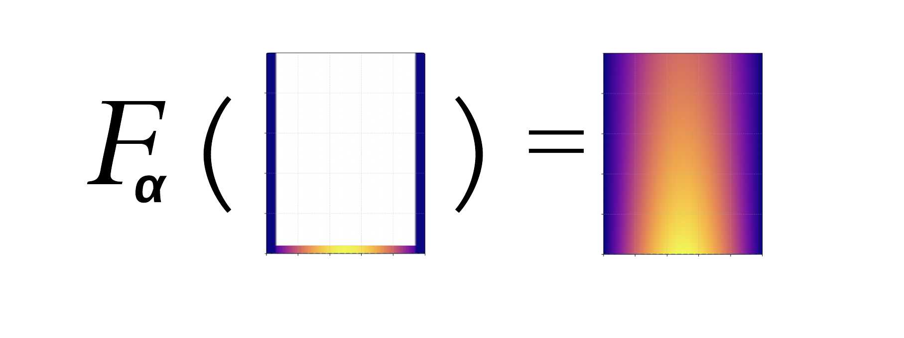
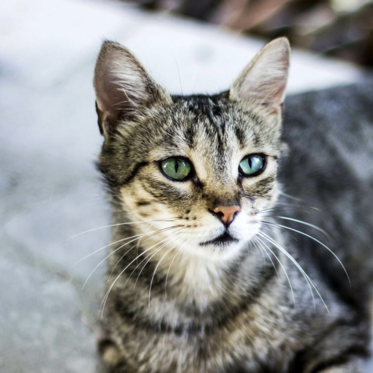
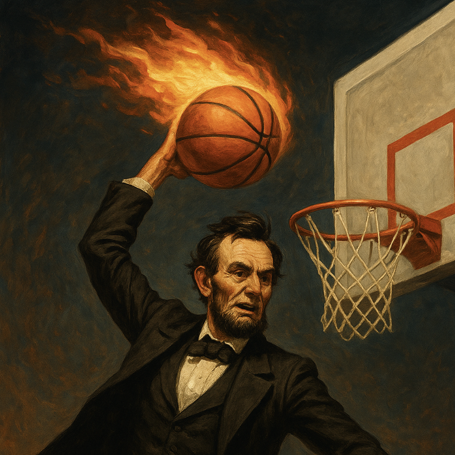
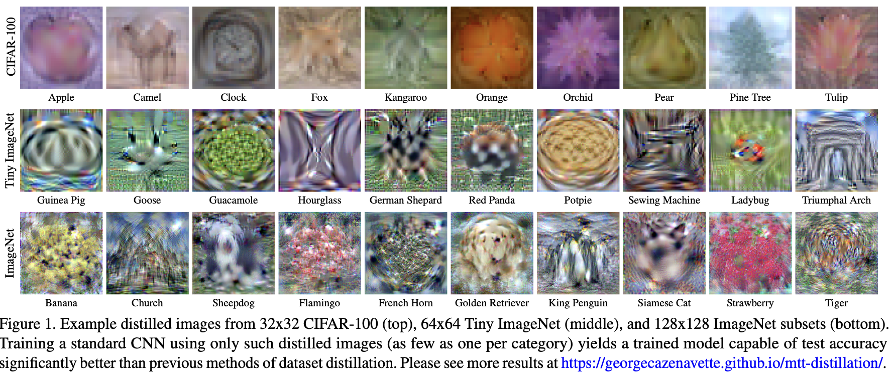

A little over a year ago, I started working on applying dataset distillation to neural operators (or, more accurately, to the data that trains neural operators). The main goal was to reduce the amount of data needed to train a performant network. But a good compression algorithm comes with the perk that you learn lots of interesting things about what the model's paying attention to, in the same way that you learn things about yourself and your priorities when you're cleaning out your apartment.
The issue was that while distillation really shone in classification settings (a good distilled dataset can nearly solve MNIST by now), it'd been under-applied to regression problems of the kind we see in science, except in certain limited domains where we could recast classification problems into the kernel regression setting to take advantage of interesting properties there. But neural networks view operator learning as a kind of function-to-function regression problem, essentially performing regression from some set of coefficients and functional conditions into the space of functional solutions to a given class of differential equations.
I thought (and still think) that applying dataset distillation to neural operator data would be a narrow yet worthwhile exercise, not least because it gives us a sense of how scientific data is represented to NNs. But this hang-up led me to strip down the problem and study distillation on a few very simple regression settings, with the intention of returning to the neural operator setting later. Then later came around, so here we are.
Neural operators
Neural operators, and neural solvers more generally, first need to adapt traditional numerical solvers into a clean input-output structure. To see this in action, we start with the constant-diffusivity form of the time-dynamic, one-dimensional heat equation, complete with a sinusoidal initial condition and Dirichlet boundary conditions: \[ \begin{cases} \text{PDE: } \frac{\partial u}{\partial t} = \alpha \cdot \frac{\partial^2 u}{\partial x^2} \\ \\ \text{IC: } u(x, 0) = \sin(\pi x) \\ \\ \text{BCs: } u(0, t) = u(1, t) = 0 \end{cases} \]
The initial and boundary conditions form a "heat cup" on the graph of temperature over time:
Using the form of the PDE and a given constant \( \alpha \), the finite difference method is sufficient to fill in the rest of the cup before the frostbite sets in:
Traditionally, we view the filling-in process –– in this case, the finite-difference method –– as a sequence of discrete linear functions. That is, given fixed mesh grains \(dt\) and \(dx\), we put \( r = \alpha \frac{dt}{dx^2} \), and set \[ u(x_i, t_{j+1}) = u(x_i, t_j) + r \cdot u(x_{i+1}, t_j) - 2 \cdot u(x_i, t_j) + u(x_{i-1},t_j) \] for \( i = 1, ..., n_x-1 \) and \( j = 0, ..., n_t \). This gives us \( (n_x - 2)(n_t - 1) \) total equations that we run in sequence.
To make this palatable for neural networks, we shift the perspective a bit by representing the entire process as a function \(F\) that takes an empty heat cup and fills it up according to a given \(\alpha\). Assume that we're OK (for now) keeping a constant mesh on the domain \( [0,1]^2 \). Then our function should do something like this:
 We can compare this to the functional representations of other kinds of models:- Image-to-text classification: \(F(\)  \() = \; \) "cat".
- Text-to-text: \(F(\) "Who you got for the '26 CFB championship?"\() = \) "The horns baby 🤘"
- Text-to-image: \(F(\) "Abe Lincoln dunking a flaming basketball"\()=\) 
Ours is a function-function mapping, which we call an operator. Rewriting our conditions as \( u(x, 0) = u_0(x) \), \(\; u(0, t) = u_L(t)\), \(\;\)and \( u(1, t) = u_R(t) \), we can formalize our operator as \[F_{\alpha}(u_0, u_L, u_R) = u(x, t),\] where \( F_{\alpha} \) is the operator parameterized by diffusivity \( \alpha \) that maps from the initial and boundary conditions (which in our example are real-valued functions \(\mathbb{R} \to \mathbb{R}\)) to the solution function \( u(x, t) \) (also a real-valued function \(\mathbb{R}^2 \to \mathbb{R}\)). The method we use to find this operator is a growing subfield of machine learning.
There are some important distinctions between our operator and the more consumer-facing kind we're used to. The biggest is that most of these models have a desirable element of creative randomness. Ask your favorite language model to write a poem three times and you'll get three different poems, each uniquely bad. This randomness is mediated in the sampling procedures we apply to the probability distributions derived from the logits, with temperature controlling how peaked or flat those distributions are before sampling. Higher temperatures cause the model to make more exotic word choices, which is a desirable property in some cases. Generative vision models have even more randomness modes –– in diffusion models, we randomly initialize a tensor, randomly add noise, and (often, but not always) randomly remove noise. The result is that asking the same prompt almost never gives the same result.
We don't want the same element of creative diversity in scientific modeling. When randomness appears, it's typically either during training (for optimization) or to explicitly model uncertainty and variability in the underlying system, rather than to generate novel creative outputs.
The world's briefest introduction to data distillation
Putting aside the operator nonsense for a second, we can define data distillation in its most general sense as an algorithm that optimizes a small dataset toward the task of training a performant model. Given a model architecture \( g( \cdot \:; \theta) \) with a loss \( \mathcal{L} \), and a dataset \( X \) of \( n \) samples with labels \( Y \), we're looking for a dataset \((\tilde{X}, \tilde{Y})\) with \( m \) samples, \( m << n \), where \[ \tilde{X}^* \in \argmin_\tilde{X} \; \mathcal{L}[ \; g(X; \theta_{\tilde{X}}); Y \;] \quad \text{ s.t. } \quad \theta_{\tilde{X}} \in \argmin_{\theta} \; \mathcal{L}[\; g(\tilde{X}; \theta), \; Y].\]
I'm glossing over the fact that, for optimization purposes, the loss \( \mathcal{L} \) is allowed to be slightly different between the two terms, but the motivation is the same. Also, it's worth underscoring that for the algorithm to make sense, it needs a particular model architecture to optimize toward. There is no "general" distilled dataset that works for any model architecture, though there are some promising directions in that regard.
Barring a closed-form minimizer, the simplest route is to perform both these optimizations through gradient descent. Here, randomly initialize \(\tilde{\mathbf{x}} :=(\tilde{X}, \tilde{Y})\) with which we train an ephemeral set of weights \(\theta\) for some number of steps. Then we take this "trained" model and evaluate it on real data, obtaining a grade of its performance. Finally, we compute the derivative of this loss with respect to the data, updating the data itself so that in the next loop, it trains a model that achieves better performance when evaluated on the real data. We run this until "converged", by which we mean that the mini-model trained on the final set of distilled dataset does a somewhat decent job evaluating the real data.
The process of optimizing the data looks a lot like "filling in" a set of data from its random initialization, which can look like diffusion if you squint hard enough.
Image classification is definitely the canonical test case for distillation: the original paper operated on MNIST and CIFAR, and most theoretical advances have defaulted to the image classification setting. These make for good visualizations, like this headline visual from Cazanavette et al.:

Distilling for regression-like problems
In a paper we wrote a few months ago, we showed that how fast a distillation algorithm converges (and indeed, whether it converges at all) is mediated by how convex your objective function is. Here, for input-lable pairs \( (X,Y) = \mathbf{x} \), we used \[\mathcal{L} = ||\tilde{\theta} X - Y||^2 + \lambda(||\tilde{X}||_F^2 + ||\tilde{Y}||_F^2), \] where \( ||\cdot||_F \) is the Frobenius norm and \( \tilde{\theta} \) represents the mini-model trained by that loop's distilled data \(\tilde{\mathbf{x}} = (\tilde{X}, \tilde{Y}).\) The weird-looking regularization term \( \lambda ||\tilde{X}||_F^2 \) ensures that when we make our gradient descent steps, we're don't tread too far from the ball around the origin where the original data lives.
While convergence is guaranteed for a strongly convex objective (whose Hessian is positive-definite), we're're forced to add larger and larger regularization terms when our Hessian starts displaying negative eigenvalues. Cueing from traditional optimization, our regularization term \( \lambda \) must be larger than the absolute value of the most negative eigenvalue \( M \) to guarantee linear convergence that depends on \( \lambda - M \).
This is important because operator networks tend to use an \( L^2 \) mean-squared error loss, which can show up in several versions:
- Supervised samples: \(\; \mathcal{L} = ||u_{\text{pred}}(x,t) - u_{\text{true}}(x,t)||^2 \) (divide by \( ||u_{\text{true}}(x,t)||^2 \) for relative error).
- Physics-informed (PDE residual): \(\; \mathcal{L} = ||\frac{\partial u}{\partial t} - \alpha \frac{\partial^2 u}{\partial x^2} ||^2 \)
- \( H^1 \) norm: \(\; \mathcal{L} = ||u_{\text{pred}} - u_{\text{true}}||^2 + ||\nabla u_{\text{pred}} - \nabla u_{\text{true}}||^2 \) (accounts for smoothness and energy constraints).